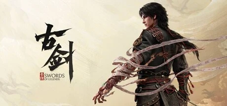

上海烛龙「古剑奇谭」系列正统单机续作，上古神话与志怪题材 ARPG，扮演地界司判引渡游魂。明确非魂类、非开放世界，宽线性叙事。
想象你在阎罗殿睁开眼——上一刻一柄紫色能量剑刚贯穿你的胸膛，下一刻你重生为「地界司判」。你走的这条路横跨阴阳两界：人间市集的灯笼印着「生死有命」，地府牌坊刻着「奈何桥」，编钟、生死簿、兵马俑服饰散落其间——这是一座从《聊斋》《子不语》里长出来的水墨幽冥。你腰挂生死簿、手握勾魂笔，职责很清楚：把滞留人间、不肯走的亡魂，一个个渡回去。
可你自己，是个灵魂缺失的「无魂之人」。你引渡的每一缕魂都带着执念——编钟前吟唱、不惜代价要留在人间的女子；心结未了、化作妖异的将死之人。你用镇魂铃、照妖镜、攻防一体的红伞与他们周旋，把最强的亡魂用缚魂锁收下、召来助战，还能和牛头马面打出一套凌厉连携。你斩的不只是妖，是一段段放不下的因果。而你手中那柄剑，剑身刻着四个字——魂兮归来。
越往下走，那四个字越像在说你自己：你替满城亡魂了却了执念，可你自己的魂，究竟丢在了哪一世、哪一场未了的因果里？科隆预告片尾那个特写亮相的神秘小女孩，她是引路人，还是你缺失的那部分？而「引渡」这件事本身——当你终于查到自己无魂的真相，你会选择渡人，还是渡己？这不是一个关于打妖降魔的故事，是一个关于「一个忘了自己是谁的人，如何在别人的执念里找回自己」的故事——明心自见，此身即岸，可你敢不敢照那面照妖镜里的自己？
「水墨幽冥」，是把中式志怪的阴森想象和上古神话的厚重考据缝进同一片阴阳两界的美学。底子是烛龙一贯的国风写实——真实比例的场景建模、细腻的贴图材质；变异在于把地府、幽冥、勾魂差役这套《聊斋》《子不语》式的志怪肌理做到插画级质感，牛头马面直接借传统年画的狞厉美感。色彩上以幽冥的青灰墨色撞灯笼与朱印的中国红双色为骨。整体调性阴森而华美，是那种「氛围好到像 2D 插画」的东方奇幻。
「国风志怪 3A」这条美学路线是这两年才被真正打通的。2010 年代，烛龙自家的《古剑奇谭三》（2018）就用写实细腻风描绘过广阔山川，是这一作美学的直接前身。2024 年《黑神话：悟空》用虚幻5把中国上古神话做成全球现象级，证明了「国产神话题材 + 顶配工业美术」的商业与口碑可行性——这也是古剑最高频被拿来对标的对象。古剑走的是一条更「文人志怪」的岔路：不打西游的热闹，而做幽冥引渡的阴森与克制，把战国漆器、秦剑、傩文化、火浣布这些冷门考据一一落进画面。它的挑战也很清楚：美术是国产第一梯队，动作打击感却仍被质疑。
基于体验清单 · 审美偏好 · IP故事三维度综合选出
点击链接跳转到对应平台查看 · 仅整理外部链接